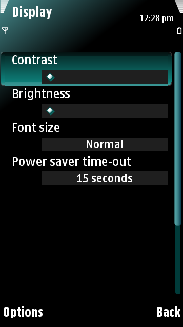
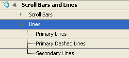

Scroll bars and lines
The different scroll bars and lines of the UI can be edited through
Scroll Bars and Lines in the Resources view of Carbide.ui. The Scroll
Bars and Lines section includes the following sub-sections:
- Scroll Bars —
These include the Vertical Scroll Track and the Vertical Focused Scroll
Handle.
- Lines —
These
include the Primary, Secondary and Dashed Lines.
Scroll bars
A scroll bar appears in the list view when the list contents exceed the
view. You can scroll up or down using vertical selection key movements.
A scroll bar consists of a track and a handle; both of them are
composed by three graphic parts: top, middle and bottom.

Figure: Display
screen
Lines
Lines are used in many places of the user interface such as in slider
tracks, view dividers and tables like Calendar. Lines have three types:
- Primary lines
- Primary dashed lines
- Secondary lines

Each type of line has both horizontal and vertical graphics that show
the correct way of how the graphic is scaled. You can edit both the
shape and color of the lines. In addition, you can also set the column
lines off.